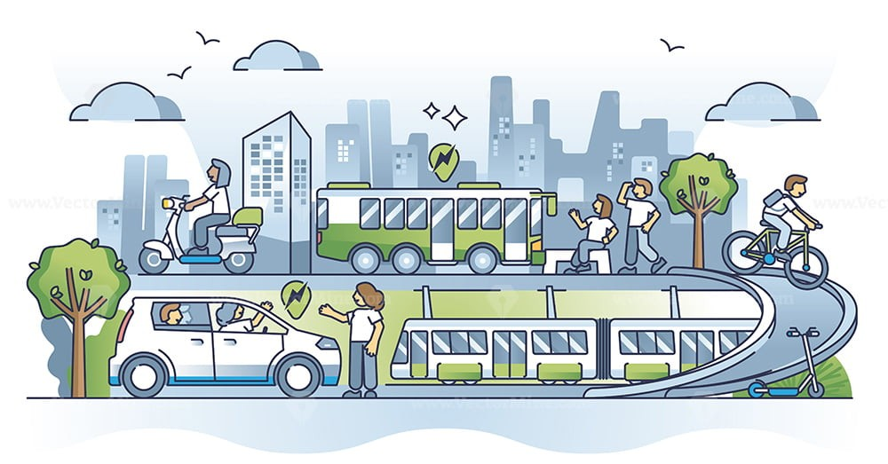
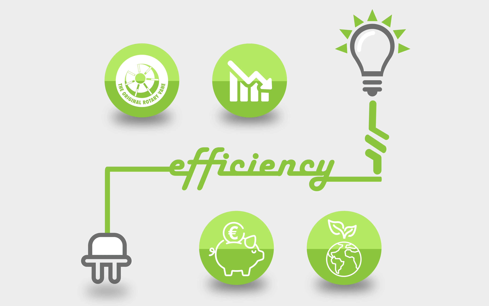
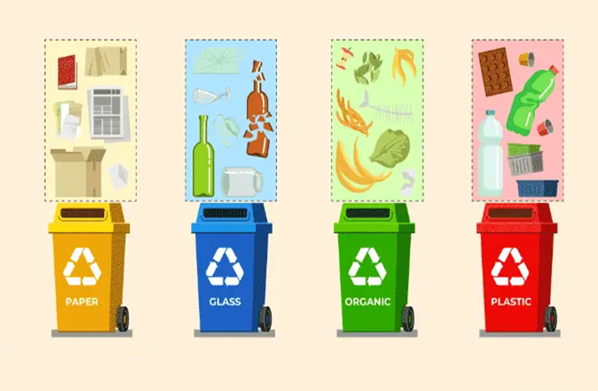
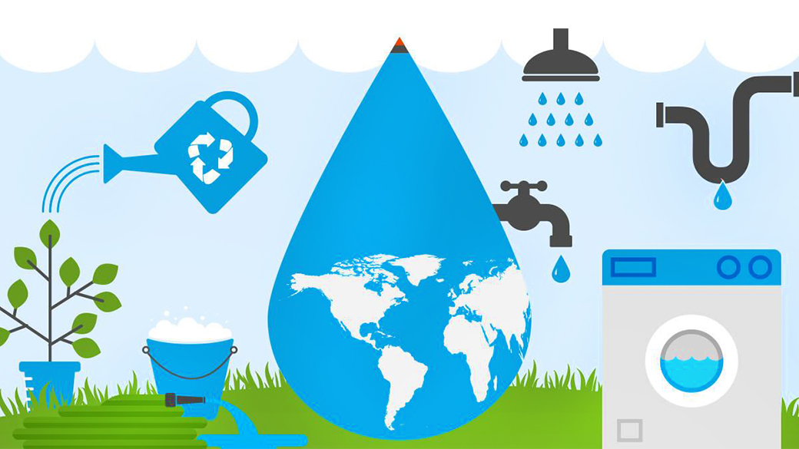
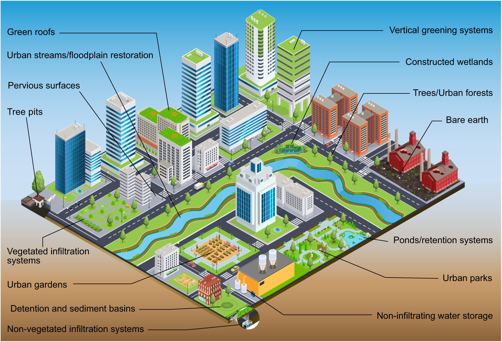
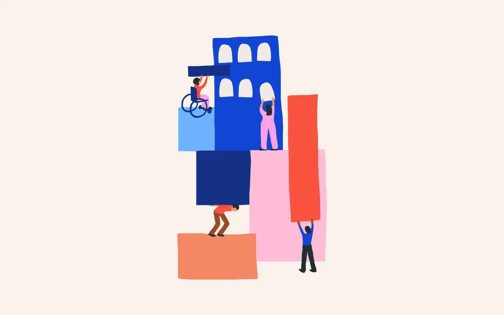
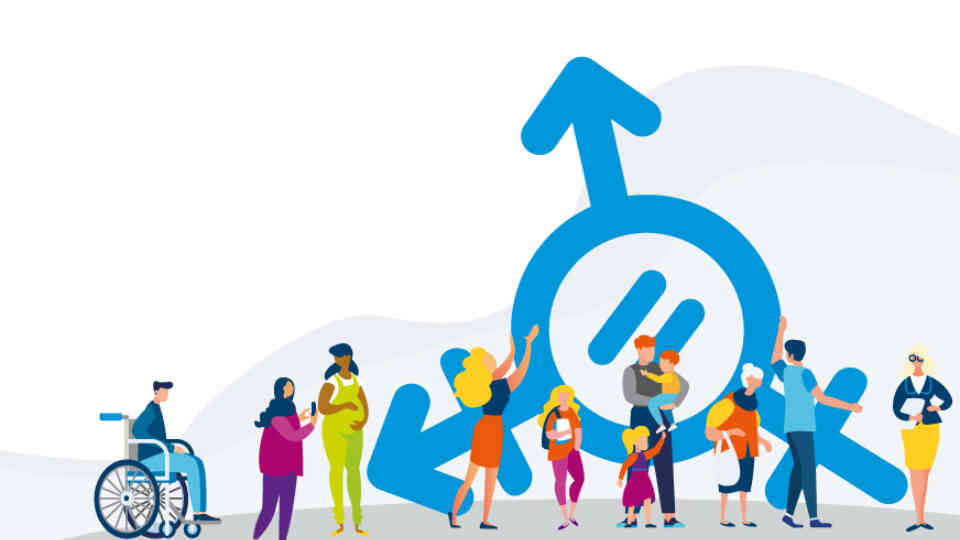

Urban Planning and Design: Implement integrated urban planning and design strategies that
promote compact, mixed-use development, efficient land use, and the preservation of green spaces. Plan
cities with a focus on walkability, accessibility, and the efficient use of resources.

Sustainable Transportation: Develop and promote sustainable transportation systems, including
public transit, cycling infrastructure, and pedestrian-friendly streets. Encourage the use of electric
vehicles, carpooling, and promote efficient public transportation networks to reduce traffic congestion, air
pollution, and carbon emissions.
Energy Efficiency: Promote energy-efficient practices and technologies in buildings, industries, and
infrastructure. Encourage the use of renewable energy sources such as solar and wind power. Implement
energy-efficient building codes, promote energy conservation, and support the development of smart grids and
green building practices.


Waste Management: Implement comprehensive waste management systems that prioritize waste
reduction, recycling, and proper disposal. Promote waste separation, recycling programs, and the development
of circular economy models to minimize waste generation and maximize resource recovery.
Water Management: Adopt sustainable water management practices, including efficient water
use, rainwater harvesting, wastewater treatment, and water conservation measures. Promote water-sensitive
urban design to manage stormwater runoff and protect water quality.


Green Infrastructure: Develop and preserve green spaces, parks, and urban forests. Create and
maintain green roofs, vertical gardens, and urban agriculture initiatives to enhance biodiversity, mitigate
urban heat island effects, and improve air quality.
Inclusive Housing: Ensure access to affordable and adequate housing for all residents.
Develop inclusive housing policies, promote mixed-income neighborhoods, and provide affordable housing
options for low-income communities.


Social Inclusion and Equity: Foster social inclusion and equitable access to services and
opportunities. Prioritize community engagement, participatory decision-making processes, and involve diverse
stakeholders in urban planning and development. Ensure that marginalized and vulnerable communities have
equal access to essential services, infrastructure, and opportunities.
Digital Innovation: Utilize digital technologies and innovations to enhance urban services,
optimize resource use, and improve efficiency. Implement smart city solutions for energy management,
transportation, waste management, and public services to create sustainable and interconnected urban
ecosystems.
Education and Awareness: Raise awareness and educate residents about sustainable practices,
behavior change, and the importance of sustainable development. Promote sustainable lifestyle choices,
environmental stewardship, and community engagement through educational campaigns, public outreach, and
capacity-building programs.